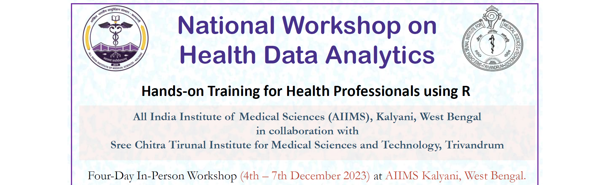

National Workshop on Health Data Analytics - 2023

🗓 December 04 - 07, 2023
⏰ 09:00 - 17:00, on all four days
📍 All India Institute of Medical Sciences, Kalyani, West Bengal
₹ Rs. 6500/- (inclusive of course kit, working lunch, and refreshments)
✍️ https://forms.gle/FWUWRXvrTM4WErjZ8
Overview
This workshop is designed for those health professionals who have no or little prior experience with programming and who want to learn R.
The proposed workshop will facilitate the development of skilled health professionals with competencies in novel techniques and methodologies employed in healthcare research, including Epidemiology and Public Health. After completing the workshop, the participants will be comfortable with undertaking data analysis using R.
By the end of the workshop, the participants will also be confident in importing datasets from multiple sources, undertaking basic database management, performing essential data visualisations and will be able to communicate using semi-automated report generation. The participants are also expected to take home a basic understanding of technology to develop decision-support systems for efficient disease surveillance, prevention and control activities.
Topics Covered
- Concepts of Tidy Data
- Reproducible Research
- Data Wrangling
- Data Visualization
- Statistical Analysis
- Communicating Research Effectively
Resource Faculty
The resource faculty for the National Workshop on Health Data Analytics are experienced professionals with expertise in data science, epidemiology, health research and public health practice.
Prof. Biju Soman
Professor and Head,
Achutha Menon Centre for Health Science Studies,
SCTIMST, Trivandrum
Dr. Biju Soman is the Professor and Head of Achutha Menon Centre for Health Science Studies, Sree Chitra Tirunal Institute for Medical Sciences and Technology (SCTIMST), Trivandrum, Kerala. Dr. Soman had completed his MBBS in 1992, DPH in 1996 and M.D. (Community Medicine) in 1999 from University of Kerala and his MSc (Control of Infectious Diseases) in 2011 from University of London and DLSHTM in 2012 from the London School of Hygiene and Tropical Medicine (U.K.).
He has undergone advanced training in health informatics from Oslo University (Norway), Teaching Methodology from Boston School of Public Health (USA), Multilevel Modelling from Bielefeld University (Germany), and Advances in Geographic Information Systems (GIS) from National Remote Sensing Centre (Hyderabad). Dr. Soman teaches Public Health Technologies, Infectious Disease Epidemiology, and Database Management in Epidemiology modules at AMCHSS as part of the PhD and MPH curriculum. Some of his professional involvements at SCTIMST include Board of Studies (Health Sciences); Standing Academic Committee; and Research Advisory Committee. He also heads the Regional Technical Resource Centre (RTRC) of the Health Technology Assessment India (HTAIn) at SCTIMST, Trivandrum.
His current research and teaching are around health data science, including public health informatics, geospatial analysis, telemedicine, health technology assessment, and infectious disease epidemiology. He endorses open data initiative, FOSS resources, and reproducible research initiatives.
Dr. Arun Mitra Peddireddy
Research Scholar (DST Fellow),
SCTIMST, Trivandrum
Dr. Arun Mitra is currently pursuing his PhD in Health Data Science from Achutha Menon Centre for Health Science Studies, SCTIMST, Trivandrum. He has an MD in Community Medicine from Maharashtra University of Health Sciences and has worked as a Senior Resident at All India Institute for Medical Science (AIIMS), Bhopal before joining his PhD.
He received advanced training in Modern Modelling Techniques from London School of Hygiene and Tropical Medicine, UK. He is also certified in Digital Health and Imaging in Healthcare from the Indian Institute of Science (IISc), Bengaluru. He is a contributing member of the R Epidemics Consortium (https://www.repidemicsconsortium.org) based at Imperial College, London, UK. He is also a member of Society for Data Science (https://s4ds.org/) which is an international non-governmental organization working towards empowering people on data science.
His current work is focussed on transforming health data into evidence for public health decision making. He won many accolades at various national and international venues on his work relating to health data science. He is also recipient of the few fellowships including the prestigious DST Fellowship from the Science for Equity, Empowerment and Development (SEED) Division, Department of Science and Technology, Govt. of India.
Wg Cdr (Dr.) Gurpreet Singh
Assistant Professor & Senior Medical Officer (SMO),
Armed Forces Medical Services
Dr Gurpreet Singh is a PhD Scholar at Achutha Menon Centre for Health Science Studies, Sree Chitra Tirunal Institute for Medical Sciences and Technology, Trivandrum. Dr Gurpreet is also a serving officer in Indian Armed Forces and is serving as Public Health Specialist and Epidemiologist in the parent organization. He completed his MBBS and MD (Community Medicine) from Armed Forces Medical College, Pune in 2007 and 2015 respectively, DNB (Preventive and Social Medicine) from National Board of Examinations, India in 2016.
He is recipient of Director General Armed Forces Medical Services Gold Medal, President National Board of Examinations Gold Medal, Certificate of Merit from Maharashtra University of Health Sciences, and General Officer Commanding Medallion (15 Aug 2017). He has contributed chapters to a few books and has many peer-reviewed publications.
Presently, he is working on PhD program titled “Data Science approach to Spatio-temporal modelling of Dengue in Punjab, India”.
Workshop Facilitator
Research Officer & PhD Scholar,
SCTIMST, Trivandrum
 This work is licensed under a Creative Commons Attribution 4.0 International License.
This work is licensed under a Creative Commons Attribution 4.0 International License.